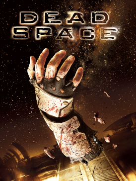
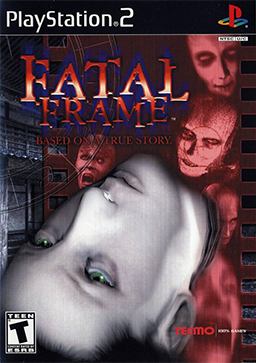
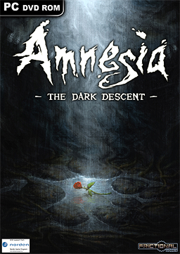
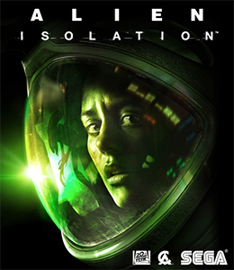
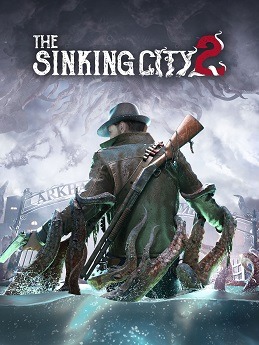

Resident Evil

A survival horror classic that combines exploration, puzzles, limited resources, and terrifying creatures inside a mysterious mansion.
A place dedicated to horror games that leave players thinking long after the credits roll.
From psychological horror to survival classics, this site explores memorable stories, terrifying creatures, and unforgettable gaming experiences.
Whether exploring abandoned towns, haunted mansions, or ancient cosmic mysteries, horror games create experiences that stay with players long after the screen fades to black. The Midnight Controller celebrates games that rely on atmosphere, storytelling, and unforgettable moments rather than simple jump scares.
A survival horror classic that combines exploration, puzzles, limited resources, and terrifying creatures inside a mysterious mansion.

A psychological horror experience known for its disturbing atmosphere, mysterious story, unsettling creatures, and fog-covered town.

A science-fiction horror game that follows engineer Isaac Clarke as he fights terrifying creatures aboard an abandoned spacecraft.

A supernatural horror game where players explore haunted locations and confront dangerous spirits using a mysterious camera.

A first-person psychological horror game focused on exploration, survival, and escaping terrifying creatures while uncovering a forgotten past.

A tense survival horror game where Amanda Ripley must explore a dangerous space station while avoiding a relentless alien creature.

A survival horror game set in the flooded city of Arkham, where players face terrifying creatures while exploring a dark Lovecraftian world.
Every featured title has earned its place through memorable storytelling, immersive worlds, or creative horror design. From legendary franchises to hidden indie gems, this collection highlights games that continue to influence the horror genre and inspire new generations of developers.
Horror games offer a unique blend of suspense, exploration, and emotional storytelling that few other genres can match. Whether surviving impossible odds or uncovering disturbing mysteries, players become active participants in stories that challenge both their courage and curiosity.
Horror games span many styles, including survival horror, psychological horror, and RPG experiences that combine character progression with terrifying environments.